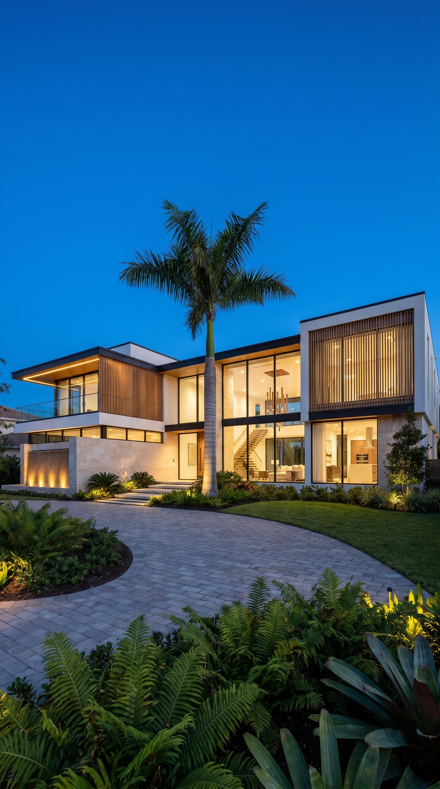
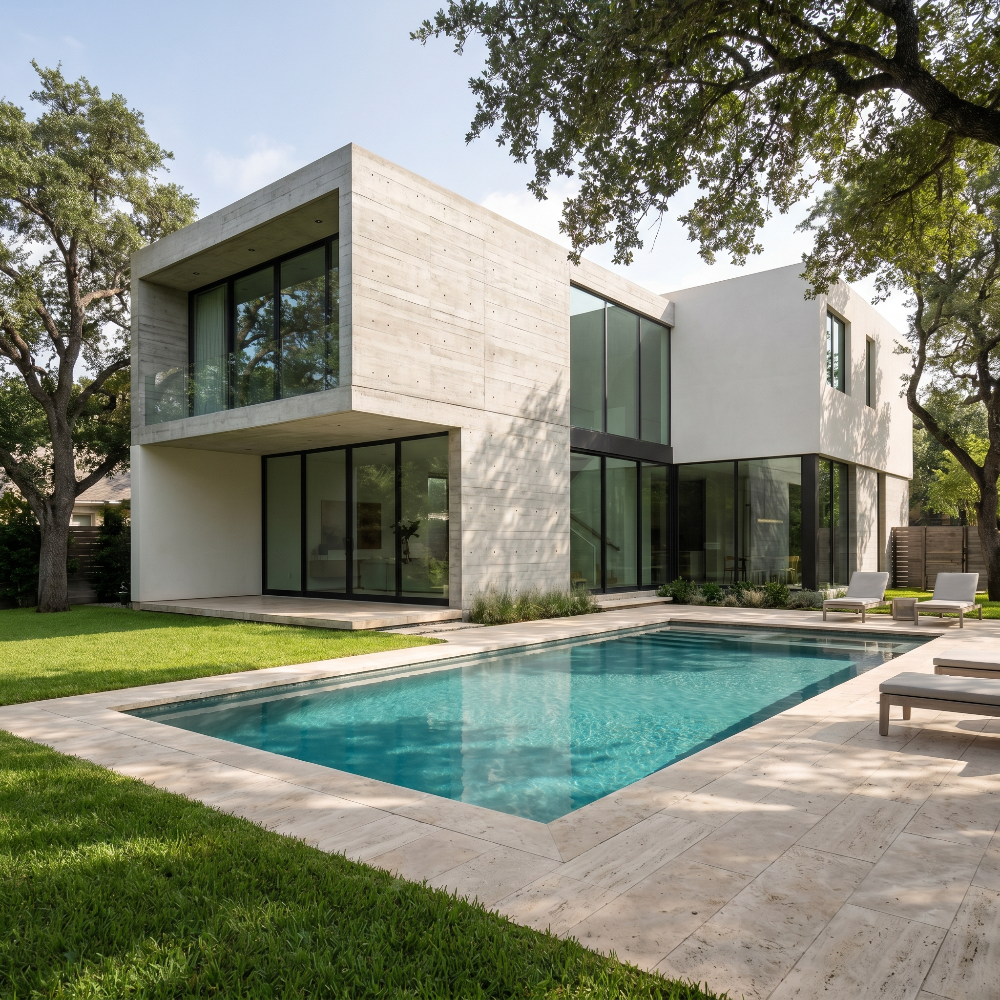

02Proyectos
Obra selecta
Ocho proyectos seleccionados entre Máncora, Colán y Piura: vivienda unifamiliar, casas de playa y espacios de trabajo donde el lugar dicta la forma.
P—012024
Casa de playa

01Casa Sal
Máncora · Piura
Cubierta ventilada y patio central para cruzar la brisa de mar a mar.
P—022023
Casa de playa

02Refugio Colán
Colán · Paita
Volumen bajo sobre el acantilado, abierto al horizonte y cerrado al viento sur.
P—032024
Vivienda + Taller
 03
03
03
Casa Algarrobo
Piura
Muros térmicos y sombra profunda; el algarrobo del terreno ordena la planta.
P—042023
Hospedaje
 04
04
04
Pabellón Duna
Vichayito · Piura
Módulos de hospedaje elevados sobre la arena, con celosía de madera al poniente.
P—052025
Bioclimática
 05
05
05
Casa Terral
Los Órganos · Piura
Diseño pasivo puro: masa térmica, ventilación cruzada y aleros calculados al sol.
P—062022
Interiorismo
 06
06
06
Estudio Norte
Piura
Reforma de un local en oficina-taller: luz difusa, concreto visto y madera clara.
P—072025
Casa de playa
 07
07
07
Casa Cabo
Cabo Blanco · Piura
Casa mirador sobre la caleta: doble altura al mar y sombra al mediodía.
P—082021
Vivienda urbana
 08
08
08
Casa Tierra
Sullana · Piura
Patio interior y celosía de ladrillo para bajar el calor seco de la ciudad.